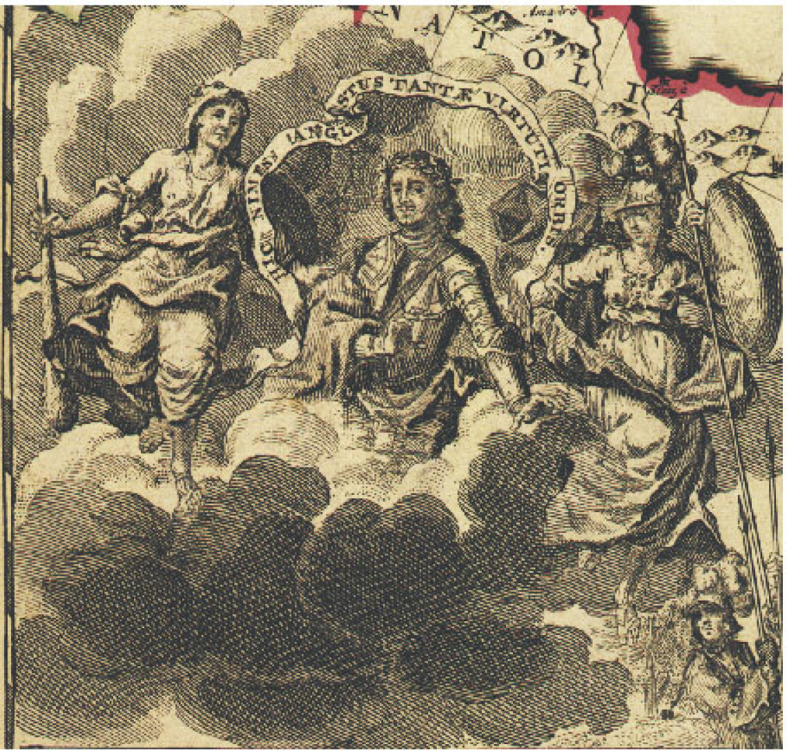
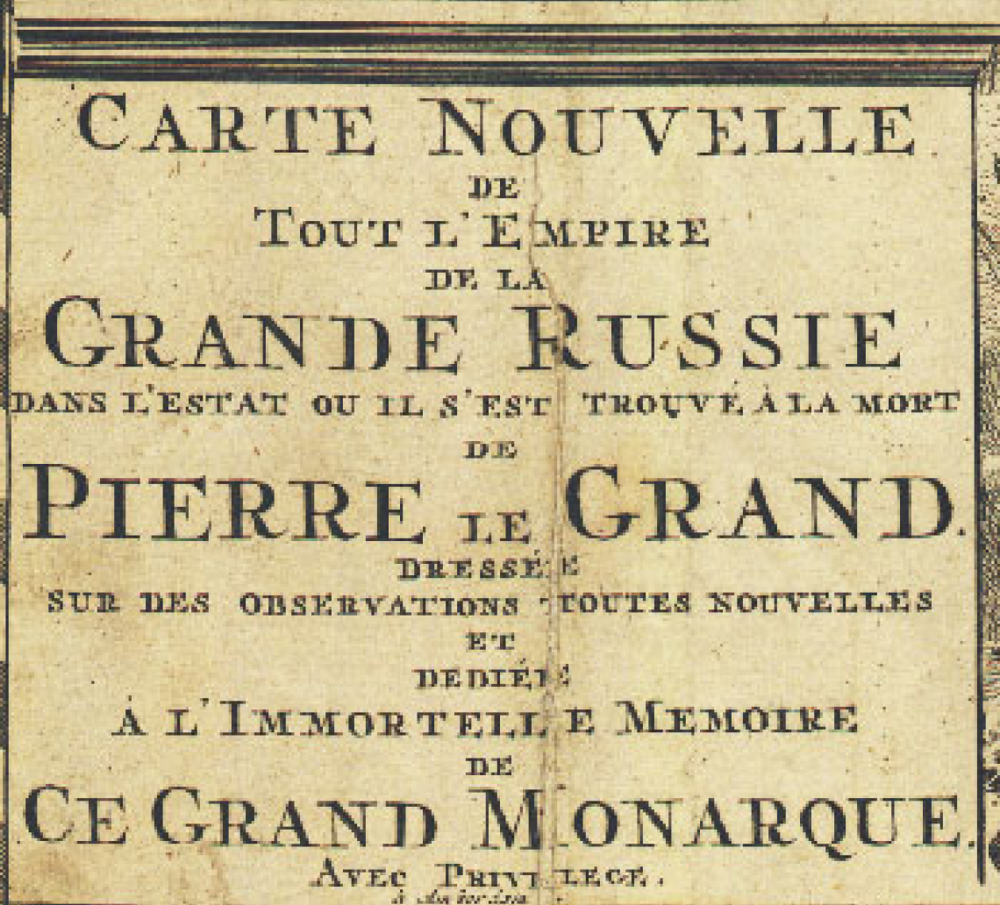
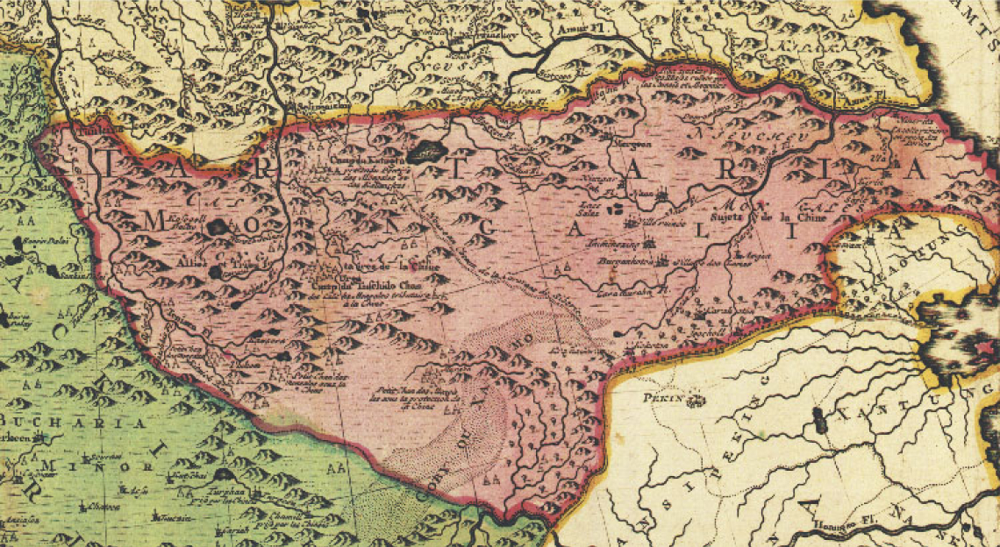

Впервые эта карта была награвирована и издана около 1726 года в Амстердаме издателем, как скрывшим своё имя,
так и не указавшим имя её автора. Современники считали, что её составили пленные шведские офицеры,
находившиеся в России до окончания Северной войны в 1721 году.
Только во второй половине XX века было установлено имя автора карты. Это был капитан шведской армии
Филипп-Иоганн Табберт (1676-1747), который провёл в плену в России 12 лет. После подписания Ништадского мира
и освобождения он вернулся в Швецию, был возведён в дворянское достоинство и получил фамилию Страленберг.
В годы плена он жил в Тобольске, собирал материалы по истории и географии России. Известно, что Страленберг
составил и вычертил три карты Сибири, но лишился их всех ещё в Тобольске. Тобольский губернатор князь М.П.
Гагарин, отбирая у него в 1717 году третью карту, предупредил Ф. Страленберга о том, что продолжение его
занятий картографией Сибири станет причиной перевода его из Тобольска на жительство к берегам Ледовитого
океана.
В 1719 году Страленберг был приглашён Даниилом-Готлибом Мессершмидтом и стал участником первой научной
экспедиции по Сибири. В 1722 году под Красноярском Страленберг узнал об окончании войны и направился на
родину. Дорогой он получил приглашение императора Петра I остаться в России и возглавить Землемерную
контору, однако не принял этого, считая "постыдным покидать своего короля и отечество". Уже в Швеции
Страленберг в 1730 году выпустил в свет книгу о Сибири и новую карту Сибири.
Представленная здесь "Новая карта всей империи Великой России" - одна из оставшихся в России карт
Страленберга, которая через третьи руки попала в Европу и была издана в 1726 году. Чуть позже её доска
перешла к издателям Райнеру и Джошуа Оттенсам, которые издали её в Амстердаме. Её перегравировывали и
издавали М. Зойтер и Т. Лоттер в городе Аугсбурге до 1770-x годов.

Никто из издателей этой карты не считал нужным обновлять её, поэтому карта и в конце XVIII века продолжала
показывать частью России персидские провинции, расположенные на южном берегу Каспия: Гилян, Мазандаран и
Астарабад, где до 1732 г. стояли русские войска.
Надпись на картуше гласит:
"Новая Карта всей Империи Великой России, в том состоянии, как она оставлена была Петром Великим.
Составлена
по новейшим наблюдениям и посвящена бессмертной памяти Великого Монарха. По привилегии".

На карте основную территорию от запада до востока занимает Российская Империя. А Тартария, в прошлом
простиравшаяся от Европы до побережья Тихого океана, о чем свидетельствуют более ранние карты, отмечена
здесь как относительно небольшая страна на юго-востоке, расположенная на месте нынешней Монголии, северного
Китая и Кореи. Собственно, она так и называется на карте: Tartaria Mongalia.
Интересный факт, что энциклопедия "Британика" еще в 1771 г. называла Тартарию самым большим государством
в мире, а на данной карте 1730 года эта самая Тартария занимает совсем небольшую территорию, которая никак
не может претендовать на величайшую в мире страну.
Красная линия на карте разделяет империю на две части: европейскую часть, которую к тому моменту довольно
прочно контролировали Романовы, и азиатскую часть - бывшую Тартарию, являвшую собой часть разгромленной и
перекроенной империи, которая находилась на тот момент все еще в руках Тартарских царей-ханов, то есть в
руках старой русской доромановской династии. Однако, на этой карте на территории бывшей Тартарии уже
значится "Россия", а надпись на картуше подчеркивает, что именно в таком состоянии страна была на момент
смерти императора Петра.
Это и понятно. Романовы всячески старались стереть из народной памяти какие-либо факты о существовании
настоящей огромной Тартарии-Монголии, не имевшей с территорией современной Монголии ничего общего. Как раз
со времен Петра стали тщательно скрывать факт существования самой Тартарии, поэтому на бумаге распространили
владения Романовых до дальнего востока, а Тартарию-Монголию перенесли, опять же на бумаге, совсем в другое
место.
На самом деле контроль над всей территорией, помеченной на этой карте, Романовы получили только в 1775 г.,
когда старая династия царей-ханов окончательно проиграла великую битву за Тартарию, названную в учебниках
истории "крестьянским восстанием Пугачева". А данная карта является великолепным свидетельством искажения
политической географии.